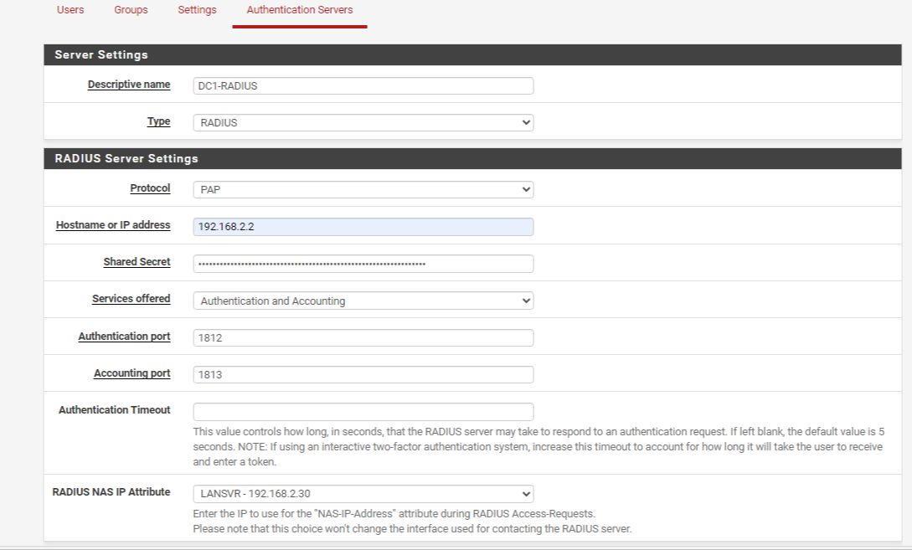

Étape 3 sur 5
pfSense : liaison RADIUS et test
Ajouter le serveur d'authentification dans pfSense et vérifier qu'un compte du domaine est reconnu.
1. Serveur d'authentification
| Champ | Valeur |
|---|---|
| Chemin | System > User Manager > Authentication Servers > Add |
| Type | RADIUS |
| Hostname or IP | Adresse IP du contrôleur de domaine (DC1) |
| Shared Secret | Le même qu'à l'étape précédente |
| RADIUS NAS IP Attribute | Interface LAN |
2. Test de communication
- Diagnostics > Authentication.
- Choisir le serveur RADIUS, saisir les identifiants AD d'un membre du groupe VPN et lancer le test.
- pfSense confirme que l'utilisateur est authentifié et membre d'un groupe : la liaison fonctionne.
Captures


Savoir-faire mobilisés
- pfSense
- Authentification centralisée
- Diagnostic